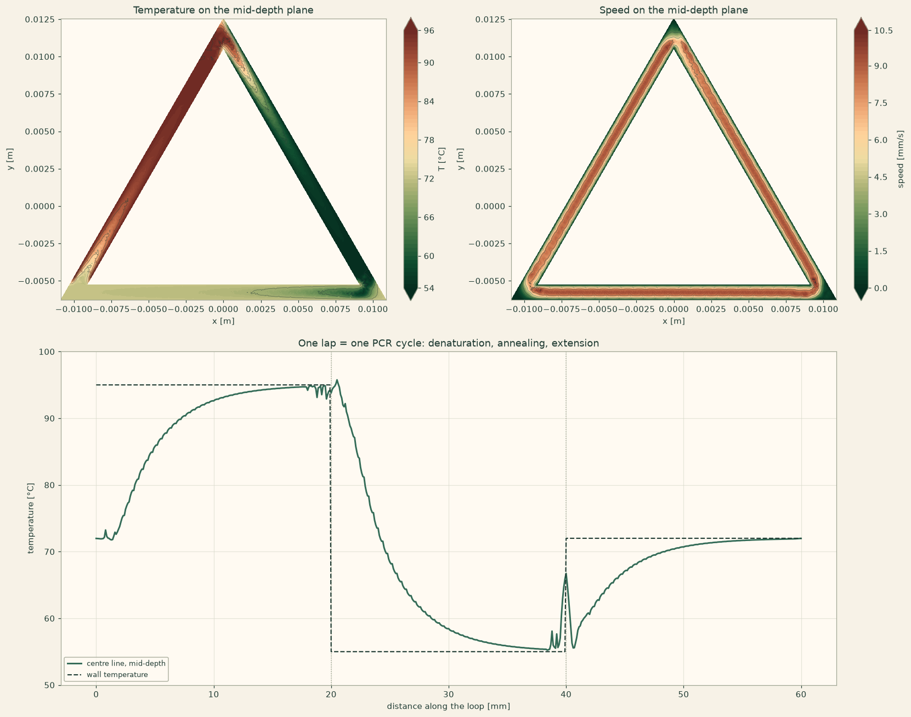
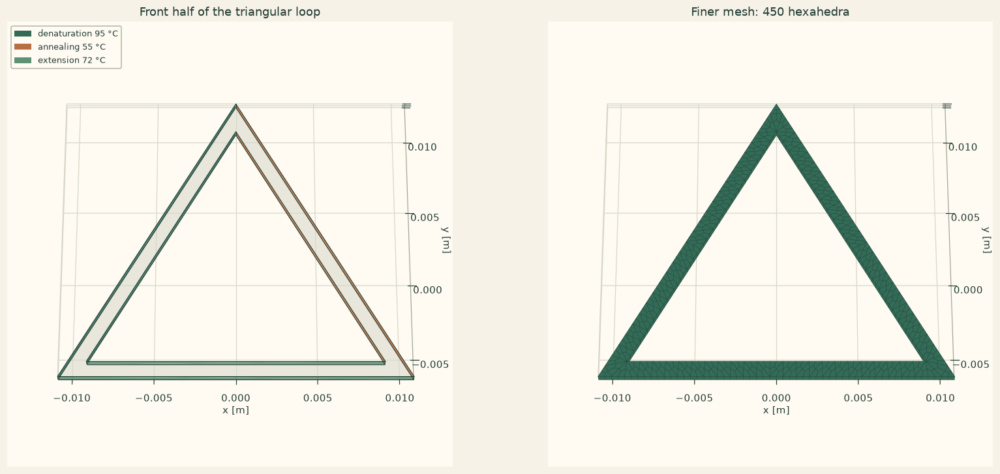

Docs › Examples › Buoyancy-driven PCR in a triangular loop
Free convection · 3D
Buoyancy-driven PCR in a triangular loop
A pump-free PCR chip: buoyancy drives the sample around an upright triangular loop whose legs are held at the denaturation, annealing and extension temperatures, one lap per thermal cycle.
Run locally with OneSimulation. The example downloads are free. Running them requires an activated runtime. Runtime Alpha 0.2.1a7 · CPython 3.13 on macOS (Apple Silicon), Ubuntu 22.04 (x86-64), and Windows x64. Installation and activation · View pilot plans. Scope of the reference checks.

What it computes
OneSimulation couples the steady 3D Navier-Stokes equations (Taylor-Hood) and the heat transport (quadratic elements) both ways through the Boussinesq buoyancy force on swept hexahedra of the front half of a loop read from STEP, with one position-dependent wall temperature for the three zones. Flow rate, cycle time and the heat each zone exchanges with the water come from plane integrals and boundary reactions. The script that builds the STEP file comes with the notebook.
What it checks
The water circulates clockwise, up the denaturation leg, at 4.43 mm/s (Re = 11, one cycle in 13.6 s); this lies between the one-dimensional loop momentum balance driven by the wall temperatures (6.13 mm/s, upper bound) and the same balance driven by the computed centre-line temperatures (3.72 mm/s, lower bound), the heat exchanged with the three zones adds up to zero within 3 %, and the finer mesh changes the speed by 0.7 %.
Geometry
The notebook starts at the import of the CAD file buoyancy_driven_pcr_loop.step: STEP (AP242), readable by any CAD program, with the names of the faces that the boundary conditions use. Put it next to the notebook.

The geometry script
The script buoyancy_driven_pcr_loop_geometry.py builds the geometry with the CAD objects of OneSimulation and writes the file. Change a dimension there, run it, and run the notebook again.
"""Geometry of the OneSimulation example "Buoyancy-driven PCR in a triangular loop".
Builds the closed triangular loop channel of a convective PCR chip with the CAD objects of
OneSimulation: an equilateral triangle standing upright in the x-y plane (gravity along -y), 20 mm
side length along the centre line of the channel, with a square channel cross-section of 1 x 1 mm.
The loop is symmetric about its mid-depth plane; the file holds the front half (0.5 mm deep).
Writes buoyancy_driven_pcr_loop.step with the face groups denaturation (both walls of the left
leg), annealing (right leg), extension (bottom leg), front (the front cover) and mid_plane.
"""
import numpy as np
from onesim.cad.d2 import Profile
from onesim.cad.d3 import Prism
side, channel = 20e-3, 1e-3
corners = lambda inradius: [
(-np.sqrt(3) * inradius, -inradius),
(np.sqrt(3) * inradius, -inradius),
(0.0, 2 * inradius),
]
centre = side / (2 * np.sqrt(3))
outer = Profile.polygon(
corners(centre + channel / 2), names=("extension", "annealing", "denaturation")
)
inner = Profile.polygon(
corners(centre - channel / 2), names=("extension", "annealing", "denaturation")
)
loop = Prism(profile=outer.with_holes(inner), height=channel / 2)
loop = loop.grouped(front=loop.boundaries.bottom, mid_plane=loop.boundaries.top)
loop.save("buoyancy_driven_pcr_loop.step")The notebook
The complete notebook, cell by cell. Run it to produce the figures and the comparison printout.
The polymerase chain reaction doubles a DNA segment in every thermal cycle: denaturation at 95 °C, annealing of the primers at 55 °C and extension at 72 °C. In a convective PCR chip the sample circulates through a closed loop whose legs are held at these temperatures, so every lap is one cycle. Here the loop is an upright equilateral triangle with 20 mm legs (along the centre line of the channel) and a square channel of 1 x 1 mm: the left leg is the denaturation zone, the right leg the annealing zone and the bottom leg the extension zone. Water heated in the left leg rises, cools in the right leg, sinks, and is brought to 72 °C in the bottom leg on its way back: denaturation, annealing, extension, in the right order.
The wall temperature is one function of the position: the extension temperature on the walls of the bottom leg, the denaturation temperature on the left and the annealing temperature on the right leg, joined by linear transitions 0.5 mm wide at the corners. The steady flow obeys the Navier-Stokes equations with the Boussinesq buoyancy force and the heat transport equation,
for water at about 75 °C (\(\rho=975\) kg/m³, \(\mu=3.8\cdot10^{-4}\) Pa s, \(k=0.665\) W/(m K), \(c_p=4190\) J/(kg K), \(\beta=6\cdot10^{-4}\) 1/K) and gravity along \(-y\).
The loop comes from the CAD file buoyancy_driven_pcr_loop.step, written by buoyancy_driven_pcr_loop_geometry.py with the CAD objects of OneSimulation. It holds the front half of the channel depth; the mid-depth plane is a plane of symmetry.
| face | flow | heat | |---|---|---| | denaturation (left leg) | no slip | \(T=95\) °C | | annealing (right leg) | no slip | \(T=55\) °C | | extension (bottom leg) | no slip | \(T=72\) °C | | front (cover) | no slip | insulated | | mid_plane | free slip (symmetry) | no flux |
Reference. A one-dimensional momentum balance of the loop: the buoyancy of the warm left leg against the cool right leg, \(\rho\beta g\,(T_D-T_A)\,h\) with the height \(h\) of the loop, drives the flow against the laminar friction of the fully developed square-duct flow, \(\Delta p=(f\,Re)\,\mu\bar u L/(2D_h^2)\) with \(f\,Re=56.91\) (R. K. Shah and A. L. London, Laminar Flow Forced Convection in Ducts, 1978) over the loop length \(L\):
It assumes that the water takes the wall temperature at once on entering each leg, so it gives an upper bound. Driven instead by the temperatures computed along the centre line of the channel, where the fast water lags the walls most, the same balance gives a lower bound; the buoyancy acts on the area-mean temperature in between. In the steady state the heat entering through the warm legs leaves through the annealing leg.
import numpy as np
from onesim.cad.d2 import Plane
from onesim.cad.exchange import load
from onesim.materials import ThermalFluid
from onesim.meshing import SweepMesher
from onesim.numerics import Numerics
from onesim.numerics.coupled_systems import StationaryPartitionedCoupling
from onesim.numerics.fem import FiniteElement, GalerkinAdvection, Lagrange, TaylorHood
from onesim.numerics.field_transfer import FieldInterpolation
from onesim.numerics.linear import SparseDirect
from onesim.numerics.nonlinear import FixedPoint, Newton
from onesim.physics.heat_transfer import (
BoussinesqBuoyancy,
ConvectiveHeatTransfer,
FixedTemperature,
HeatFlux,
)
from onesim.physics.hydrodynamics import (
FreeSlipLaw,
IncompressibleNavierStokes,
NoSlipWall,
WallShear,
)
from onesim.results.integration import integrate_plane
from onesim.simulation import Problem, Simulation
from onesim.simulation.field_connections import FieldCoupling
from onesim.simulation.field_constraints import MeanValue
from onesim.simulation.initial_conditions import InitialValue
from onesim.visualization import plots, theme
theme.set()Geometry and mesh
SweepMesher lays quadrilaterals on the front face and sweeps them to the mid-depth plane. Two meshes of quadratic hexahedra, 0.5 mm and 0.4 mm on the front face, one layer through the half depth.
loop = load("buoyancy_driven_pcr_loop.step")
faces = loop.boundaries
walls = faces.denaturation | faces.annealing | faces.extension | faces.front
meshes = [
SweepMesher(source=faces.front, target_size=size, layers=layers).generate(loop)
for size, layers in ((5e-4, 1), (4e-4, 1))
]
view = plots.Camera(elevation=65, azimuth=-90)
fig = plots.figure(1, 2, size=(15, 6.5))
plots.geometry(
loop,
selection={
"denaturation 95 °C": faces.denaturation,
"annealing 55 °C": faces.annealing,
"extension 72 °C": faces.extension,
},
labels=False,
camera=view,
title="Front half of the triangular loop",
ax=fig[0],
)
plots.mesh(
meshes[-1],
groups=("all",),
legend=False,
camera=view,
title=f"Finer mesh: {meshes[-1].cell_count} hexahedra",
ax=fig[1],
)
plots.show()Model
The flow (Taylor-Hood elements) and the heat transport (quadratic elements) share each mesh. BoussinesqBuoyancy turns the temperature into the body force, with \(\rho\) and \(\beta\) from the ThermalFluid; the solved velocity carries the heat. StationaryPartitionedCoupling alternates the two stationary solvers until both fields settle. The loop is closed, so the pressure level is fixed by its mean.
celsius, reference, gravity = 273.15, 348.15, 9.81
zones = {"denaturation": 95.0, "annealing": 55.0, "extension": 72.0}
side, channel = 20e-3, 1e-3
centre = side / (2 * np.sqrt(3))
water = ThermalFluid(
density=975.0,
dynamic_viscosity=3.8e-4,
thermal_conductivity=0.665,
specific_heat_capacity=4190.0,
thermal_expansion_coefficient=6e-4,
)
flow = IncompressibleNavierStokes(domain=loop.volume, material=water)
heat = ConvectiveHeatTransfer(domain=loop.volume, material=water, velocity=None)
problem = Problem(
name="Convective PCR loop",
geometry=loop,
physics=(flow, heat),
boundary_conditions=(
NoSlipWall(physics=flow, boundary=walls),
WallShear(physics=flow, boundary=faces.mid_plane, law=FreeSlipLaw()),
FixedTemperature(
physics=heat,
boundary=faces.denaturation | faces.annealing | faces.extension,
value=lambda x, y, z: celsius
+ zones["extension"]
+ np.clip((y + centre - channel / 2) / 5e-4, 0, 1)
* (75.0 - 20.0 * np.clip(x / 5e-4, -1, 1) - zones["extension"]),
),
HeatFlux(physics=heat, boundary=faces.front | faces.mid_plane, value=0.0),
),
constraints=(MeanValue(flow.pressure, 0.0),),
initial_conditions=(InitialValue(heat.temperature, reference),),
couplings=(
FieldCoupling(
source=heat.temperature,
target=flow.field("body_force"),
transfer=BoussinesqBuoyancy(
gravity=(0, -gravity, 0), reference_temperature=reference
),
),
FieldCoupling(
source=flow.velocity,
target=heat.advecting_velocity,
transfer=FieldInterpolation(),
),
),
)
numerics = {
flow: Numerics(
spatial=FiniteElement(element=TaylorHood()),
initial_guess={flow.velocity: (0.0, 0.0, 0.0)},
nonlinear_solver=Newton(
linear_solver=SparseDirect(),
absolute_tolerance=1e-14,
relative_tolerance=1e-7,
),
),
heat: Numerics(
spatial=FiniteElement(
element=Lagrange(order=2), convection=GalerkinAdvection()
),
linear_solver=SparseDirect(),
),
}
results = [
Simulation(
problem=problem,
mesh={flow: mesh, heat: mesh},
numerics=numerics,
coupling_solver=StationaryPartitionedCoupling(
stationary_systems=(flow, heat),
iteration=FixedPoint(
relative_tolerance=1e-5,
absolute_tolerance=1e-9,
maximum_iterations=100,
relaxation=0.8,
),
),
).solve_stationary()
for mesh in meshes
]Circulation and heat balance
The flow rate is the velocity integrated over the cut through the bottom leg (integrate_plane with within keeping that leg); doubled for the full depth and divided by the channel area it is the mean speed. reaction gives the heat each zone exchanges with the water, consistent with the discretised balance, so the three must add up to zero. The temperature along the centre line of the channel shows how far the water follows the wall temperatures. One lap of the loop is one PCR cycle.
height, length = 3 * side / (2 * np.sqrt(3)), 3 * side
loop_balance = (
lambda driving: 2
* water.density
* water.thermal_expansion_coefficient
* gravity
* driving
* channel**2
/ (56.91 * water.dynamic_viscosity * length)
)
corners = np.array(
[
[-np.sqrt(3) * centre, -centre],
[0.0, 2 * centre],
[np.sqrt(3) * centre, -centre],
[-np.sqrt(3) * centre, -centre],
]
)
lap = np.linspace(0.0, 3.0, 601)
path = np.column_stack(
(
np.interp(lap, [0, 1, 2, 3], corners[:, 0]),
np.interp(lap, [0, 1, 2, 3], corners[:, 1]),
)
)
bottom_cut = Plane(origin=(0.0, 0.0, 0.0), normal=(1.0, 0.0, 0.0))
speeds = []
for name, mesh, result in zip(("coarser", "finer"), meshes, results):
velocity, temperature = result.field(flow.velocity), result.field(heat.temperature)
rate = (
2
* integrate_plane(
velocity,
bottom_cut,
normal_component=True,
within=lambda points: points[:, 1] < 0,
).value
)
speeds.append(abs(rate) / channel**2)
taken = {zone: 2 * temperature.reaction(faces[zone]) for zone in zones}
print(
f"{name} mesh ({mesh.cell_count} hexahedra, {len(result.result_set.solver_report['coupling']['scaled_changes'])} coupling sweeps): "
f"flow rate {abs(rate) * 1e9 * 60:.2f} µl/min, mean speed {1e3 * speeds[-1]:.3f} mm/s, Re = "
f"{water.density * speeds[-1] * channel / water.dynamic_viscosity:.1f}"
)
print(
" heat exchanged with the walls: "
+ ", ".join(f"{zone} {1e3 * value:+.2f} mW" for zone, value in taken.items())
+ f"; sum {1e3 * sum(taken.values()):+.3f} mW ({100 * sum(taken.values()) / max(abs(v) for v in taken.values()):+.3f} %)"
)
centre_line = (
results[-1]
.field(heat.temperature)
.evaluate(np.column_stack((path, np.full(len(lap), channel / 2 - 1e-9))))
.ravel()
)
driving = abs(np.trapezoid(centre_line, path[:, 1]))
print(
f"\ncirculation in the plane: {'clockwise, up the denaturation leg' if rate < 0 else 'counter-clockwise, up the annealing leg'}"
)
print(
f"one-dimensional loop balance with the wall temperatures: {1e3 * loop_balance(40.0 * height):.3f} mm/s; 3D model "
f"{1e3 * speeds[-1]:.3f} mm/s ({100 * (speeds[-1] / loop_balance(40.0 * height) - 1):+.1f} %)"
)
print(
f"the water does not reach the wall temperatures: the centre-line temperatures drive with {driving / height:.2f} K instead of 40 K, "
f"and the same balance then gives {1e3 * loop_balance(driving):.3f} mm/s ({100 * (speeds[-1] / loop_balance(driving) - 1):+.1f} %)"
)
print(
"the buoyancy acts on the area-mean temperature, which lies between the centre-line and the wall temperatures, "
"so the two one-dimensional estimates bracket the 3D result"
)
print(
f"mesh study: mean speed changes by {100 * (speeds[-1] / speeds[0] - 1):+.2f} % from the coarser to the finer mesh"
)
print(
f"cycle time (one lap): {length / speeds[-1]:.1f} s, i.e. {side / speeds[-1]:.1f} s in each temperature zone; "
f"30 cycles in {30 * length / speeds[-1] / 60:.1f} min"
)Figure
Temperature and speed on the mid-depth plane, and the temperature along the centre line of the channel over one lap, starting at the lower left corner and running up the denaturation leg.
fig = plots.figure(layout=[["temperature", "speed"], ["lap", "lap"]], size=(15, 12))
plots.surface(
results[-1].field(heat.temperature),
boundary=faces.mid_plane,
component=lambda T, position: T - celsius,
limits=(55.0, 95.0),
contours=8,
subdivisions=2,
aspect=1.0,
label="T [°C]",
xlabel="x [m]",
ylabel="y [m]",
title="Temperature on the mid-depth plane",
ax=fig["temperature"],
)
plots.surface(
results[-1].field(flow.velocity),
boundary=faces.mid_plane,
component=lambda u, position: 1e3 * np.linalg.norm(u, axis=1),
contours=4,
subdivisions=3,
aspect=1.0,
label="speed [mm/s]",
xlabel="x [m]",
ylabel="y [m]",
title="Speed on the mid-depth plane",
ax=fig["speed"],
)
plots.line(
side * lap * 1e3,
{"centre line, mid-depth": centre_line - celsius},
reference={
"wall temperature": (
side * lap * 1e3,
np.select([lap < 1, lap < 2], [95.0, 55.0], 72.0),
)
},
vlines=[1e3 * side, 2e3 * side],
ylimits=(50.0, 100.0),
xlabel="distance along the loop [mm]",
ylabel="temperature [°C]",
title="One lap = one PCR cycle: denaturation, annealing, extension",
legend="lower left",
ax=fig["lap"],
)
plots.show()Going further
Make the channel narrower or the loop taller in buoyancy_driven_pcr_loop_geometry.py and follow the cycle time; give the zones the temperatures of a two-step protocol; or let a dilute species (the amplified DNA) ride on the solved flow with a source in the extension leg to estimate the yield per lap.